Heen gaan we in twee etappes met een wandeling in Berlijn tussendoor. Terug zijn het drie etappes maar zijn alle overstappen "op hetzelfde perron".
Voor zowel heen- als terugreis zijn de kaartjes gesplitst in een Nederlands en Duis deel. Voor alle kaartjes geldt dat Joek een PDF bij zich heeft, maar jullie kunnen je voor het Nederlandse deel gemakkelijker maken, door de NS-app op je telefoon te installeren en dan via onderstaande links jouw persoonlijke kaartje op te halen.
kaartjes NL heenreis 8 mei
kaartjes NL terugreis 12 mei
Heen gaan we in twee etappes met een wandeling in Berlijn tussendoor. Terug zijn het drie etappes maar zijn alle overstappen "op hetzelfde perron".
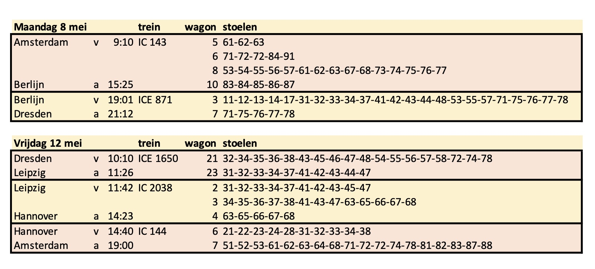Tussen aankomst om 15:25 en vertrek om 19:01 gaan we een wandeling van drie kilometer maken die ons langs vele bijzonderheden van deze wereldstad voert. Er is een afspraak gemaakt: om 17:00 mogen we de Reichstag in om de koepel te beklimmen. Na de Reichstag hebben we krap drie kwartier om terug te keren naar het station en daar onze maag te vullen, de trein naar Praag wacht niet!
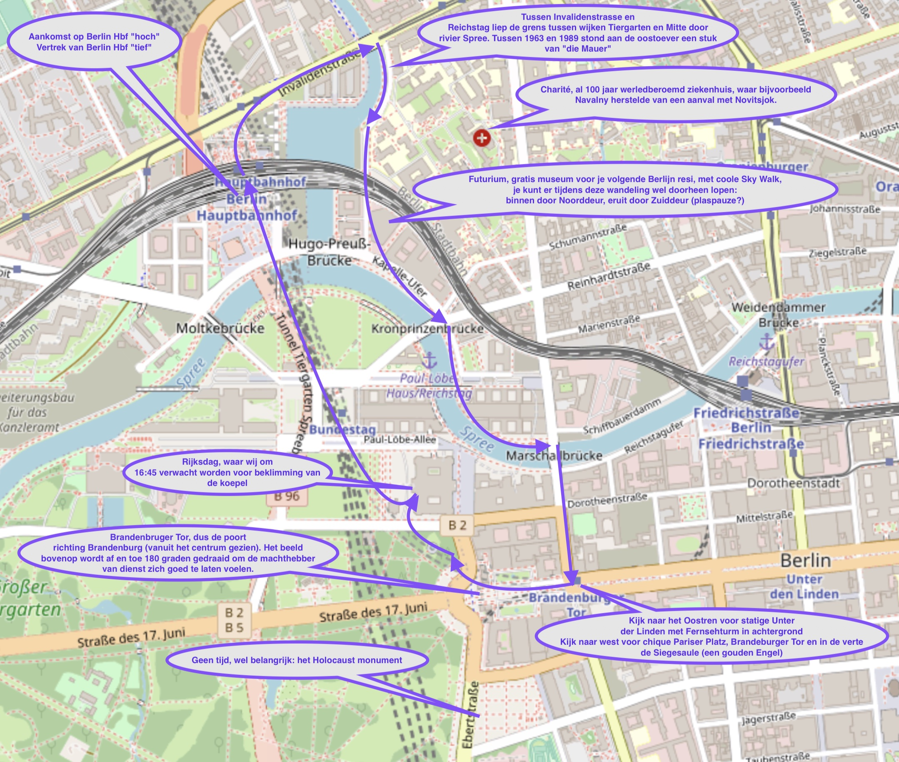Op dinsdagochtend gaan we, na het ontbijt in het hostel, te voet richting de Frauenkirche. Deze kerk staat middenin de oude stad. In de Tweede Wereldoorlog werd Dresden op 13 en 14 febuari 1945 zwaar gebombardeerd. De Frauenkirche werd niet geraakt, maar de vlammenzee die volgde op de bombardementen deed het dak van de kerk instorten. Ten tijde van de DDR bleef de ruïne staan, als permanente herinnering aan de verschrikkingen van de Tweede Wereldoorlog. Na de Wending is men, in 1994, begonnen met de wederopbouw. Dit heeft zo’n 130 miljoen euro gekocht. Sinds 2005 is de kerk officieel weer in gebruik. We gaan niet alleen binnen in de kerk kijken, maar we gaan ook de kerk beklimmen, zodat we een mooi uitzicht hebben over het oude deel van Dresden. We zullen tussen 10:00 uur en 10:30 uur bij de Frauenkirche zijn, dus reken zelf maar uit hoe laat je dan op moet.
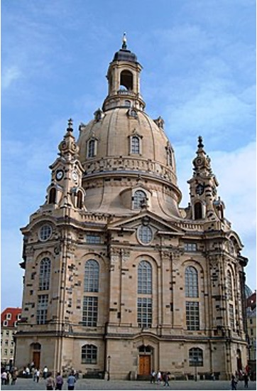Vanaf de Frauenkiche gaan we aan de wandel door het oude centrum van Dresden wat, zoals eerder genoemd, tijdens het bombardement in 1945 grotendeels verwoest is. Grote delen van het centrum zijn weer opgebouwd, maar we gaan toch op zoek naar herinneringen aan dit verwoestende bombardement. (Voor de literair-geïnteresseerden onder jullie: Harry Mulisch heeft in zijn roman Het stenen bruidsbed een prominente plek ingeruimd voor het bombardement van Dresden. De hoofdpersoon Norman Corinth is een Amerikaanse tandarts die een uitnodiging krijgt voor een medisch congres in Dresden (1958). Het zal de eerste keer zijn dat hij Dresden weer bezoekt nadat hij, als boordschutter, mee heeft gedaan aan het bombardement van 1945 waarbij zo’n 30.000 burgerslachtoffers vielen.) Je zult zien dat er in Dresden voor gekozen is om het oude centrum op te bouwen in de oude stijl. Interessant om dit te vergelijken met bijvoorbeeld Rotterdam. Beide steden zijn praktisch even groot en zijn allebei verwoest tijdens de Tweede Wereldoorlog. Het oude en het nieuwe deel van Dresden worden van elkaar gescheiden door de Elbe. Later deze week zullen we de rivier oversteken om het nieuwe gedeelte te bezoeken, maar op de dinsdag blijven aan de oude kant. Langs de Elbe is het heerlijk wandelen. Bij warm weer is het ook mogelijk om een verfrissende duik te nemen in de rivier. Zomers vinden er geregeld festivals plaats langs de rivier. Na de wandeling krijgen jullie van ons de kans om Dresden op eigen houtje te ontdekken. Zoek een fijne plek om te lunchen, ontdek of Dresden een goede winkelstraat heeft of bezoek dat ene museum dat niet op het programma staat. Om 18:00 uur moet iedereen fris en fruitig klaar zijn voor het avondeten in het hostel, zodat de operagangers, samen met Joek, op tijd kunnen vertrekken.
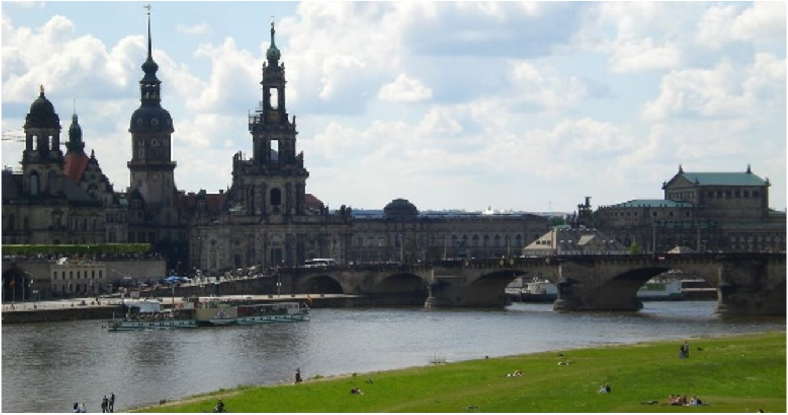Na de wandeling krijgen jullie van ons de kans om Dresden op eigen houtje te ontdekken. Zoek een fijne plek om te lunchen, ontdek of Dresden een goede winkelstraat heeft of bezoek dat ene museum dat niet op het programma staat. Om 18:00 uur moet iedereen fris en fruitig klaar zijn voor het avondeten in het hostel, zodat de operagangers, samen met Joek, op tijd kunnen vertrekken.
Dinsdagavond kunnen 10 leerlingen mee naar de Semper Oper, een operahuis van wereldfaam. Het programma (75 minuten) vind je hier. Voor wie geld (tenminste 34 euro) en tijd heeft kun je nu nog kaartjes kopen voor het veel specialere Zauberflöte op donderdagavond
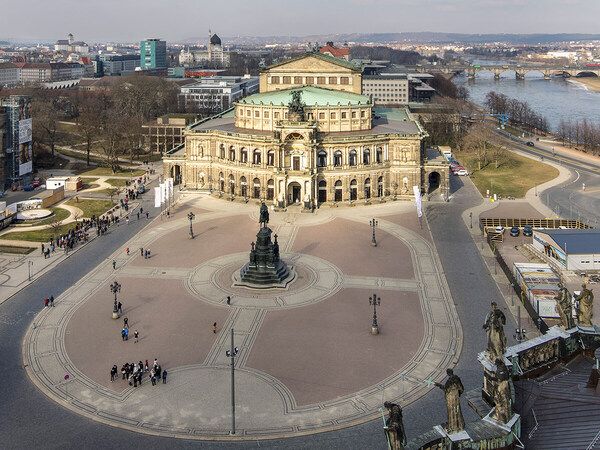Dit is onze meest sportieve dag van de week. We gaan om 8:00 uur ontbijten, vertrekken om 8:45 uur, zodat we om 9:00 uur onze fietsen kunnen ophalen. Vanuit het oude centrum fietsen we, via het prachtige fietspad langs de Elbe, naar het stadje Pirna. Daar zullen we om 11:00 uur het DDR-museum bezoeken. Hier krijgen we een inkijkje hoe het leven was in de DDR, tussen de Tweede Wereldoorlog en de val van de Muur. Het museum is niet al te groot, dus we verwachten met een uurtje weer buiten te staan. Rond de lunch hebben jullie vrije tijd; zoek een mooi plekje op voor een Oost-Duitse lunch en gun je benen wat rust, want we zitten qua kilometers pas op de helft. Tussen 14:00 uur en 14:30 uur beginnen we aan onze tocht richting Dresden. Op de heenweg hebben we de zuidoever van de Elbe genomen, dus op de terugweg gaan we via de noordkant. Onderweg zullen we nog stoppen bij enkele bezienswaardigheden en is er de mogelijk om een verfrissende duik te nemen in een van de vele meertjes. Kortom, zwemkleding en handdoek mee! Aan het eind van de middag zijn we weer terug, zodat we op tijd terug zijn in het hostel voor het avondeten.
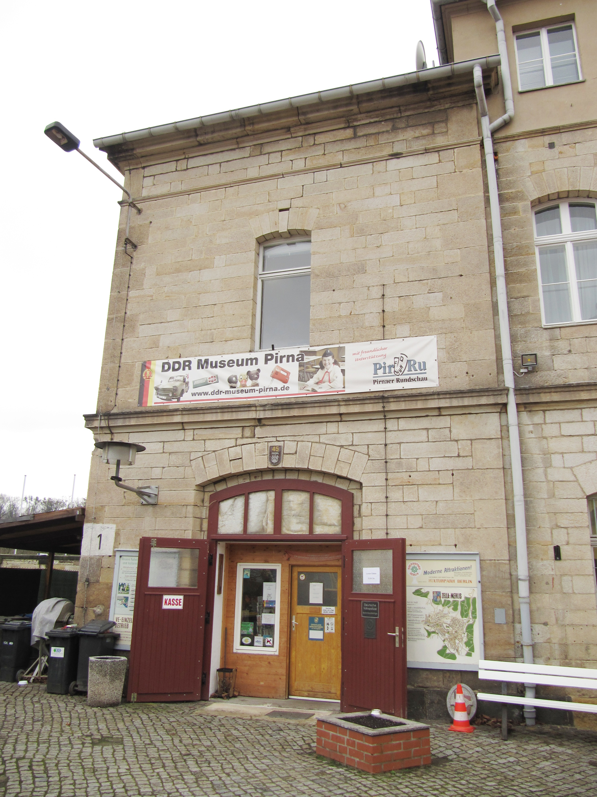In ideeën lees je over allerlei mogelijke programmaonderdelen die het niet gehaald hebben in het gemeenschappelijke programma. Je hebt vrije tijd, wie weet zit er iets voor jou tussen.
Er gaat een portable bios mee, het enige wat nodig is, is een stopcontact in de buurt van muur of plek om laken op te hangen. Als een van jullie zo'n JBL-speakertje mee heeft, wordt het geluid ook mooi!
Ik neem vijf zeer interessante, vermakelijke, leerzame, mooie, … films mee.
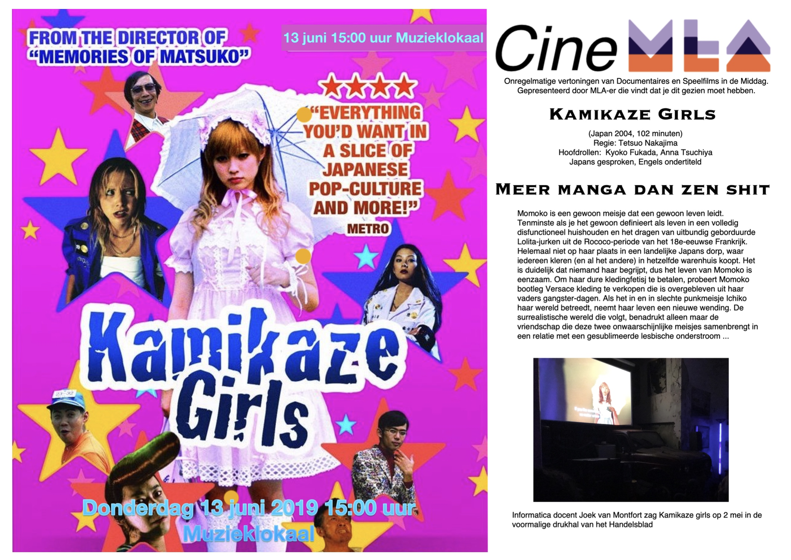Joeks dochter is veganist en daty betekent dat ze op reis altijd wat meer moeite moet doen om goede adresjes te vinden. Inmiddels ben ik erachter dat de plekken waar zij prettig eet ook voor de rest van de mensheid vaak super tof zijn. Daarom hier de tips de ze mij stuurde.
Aan de overkant van de Elbe kun je een wandeling omhoog afkopen met een kaartje voor mooie kabelbaan.
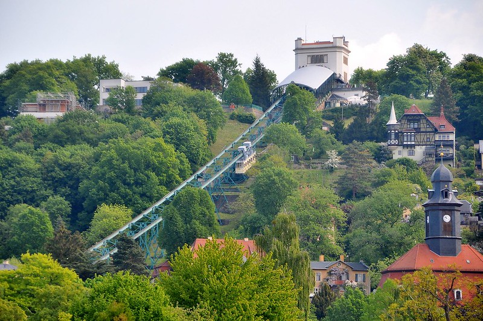Aan de oostkant van de stad vind je een wiskundemuseum! Nou weet ik dat het woord wiskunde bij velen garant staat voor "ik heb wel wat beters te doen", maar Joek ziet dat anders en verzamelt Wiskundemusea. Dit wordt zijn vierde! En Joek belooft dat wie meegaat geen spijt krijgt. Wedden?
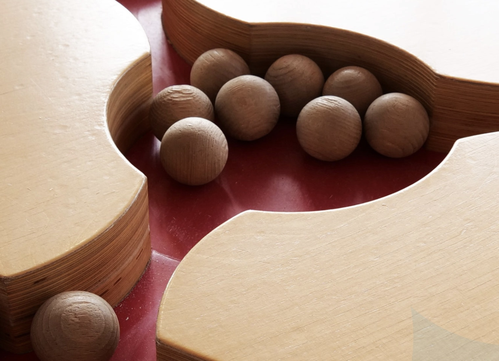Aan het begin van het park staat een glazen fabriek! Tamelijk spectaculair hoe je hier kunt zien hoe Volkswagen elektrische auto's bouwt in een werkplaats die meer aan een clean room doet denken.
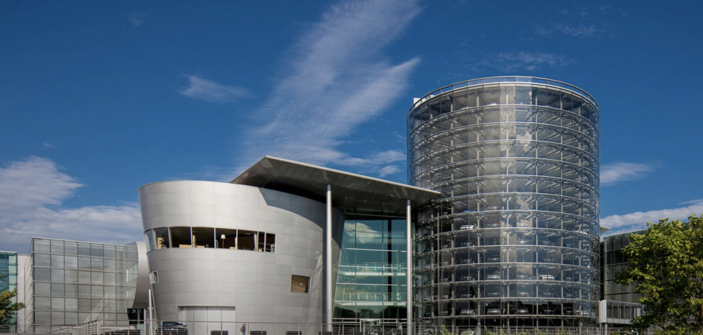Duitsland als land bestaat pas sinds 1871, daarvoor was het een bonte verzameling koninkrijkjes. Tamelijk voornaam was Sachsen met als hoofdstad Dresden. Een toernooiveld met omliggende gebouwen is eigenlijk een gigantisch paleis met tegenwoordig een heleboel musea erin. Het Brieflezend meisje bij venster van Vermeer is tijdelijk uitgeleend aan het Rijks
. Groots is ook de collectie porselein. Vlak bij Dresden, in het stadje Meissen, lukte het Europeanen voor het eerst om de prachtige techniek uit China te kopiëren. Het Zwinger is niet te missen wanneer je door de oude stad van Dresen banjert. Je loopt er steeds tegenaan. Hou je van musea, dan moet je zeker overwegen naar binnen te gaan. 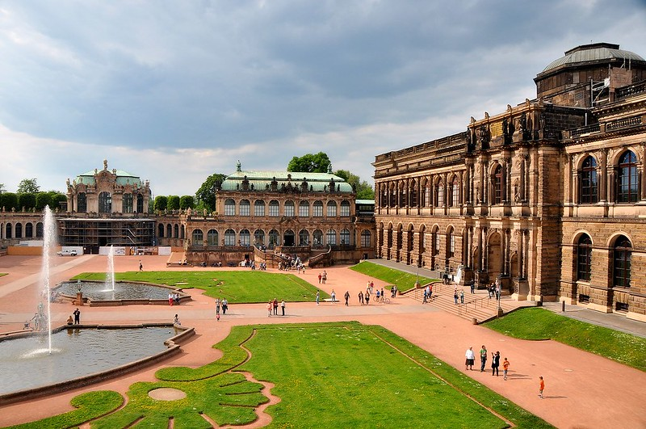De kamerindeling was een puzzel …
Waar eten we?
tekstje